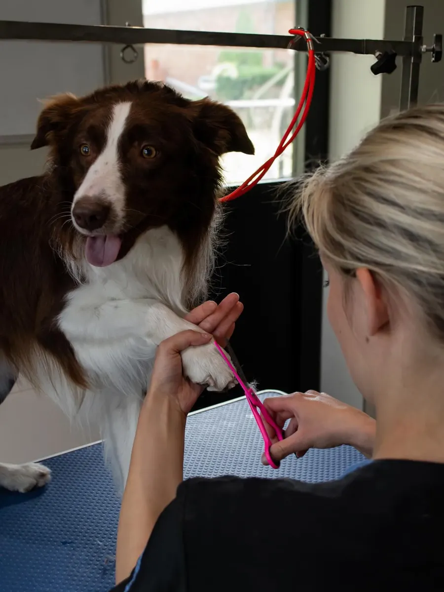
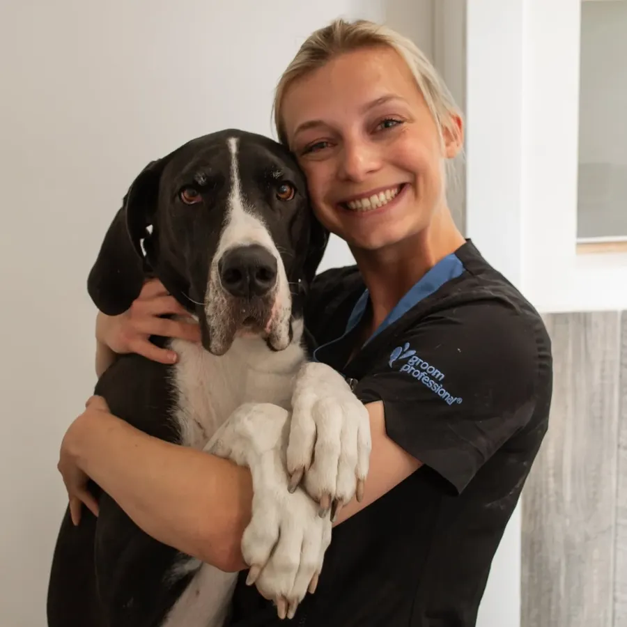
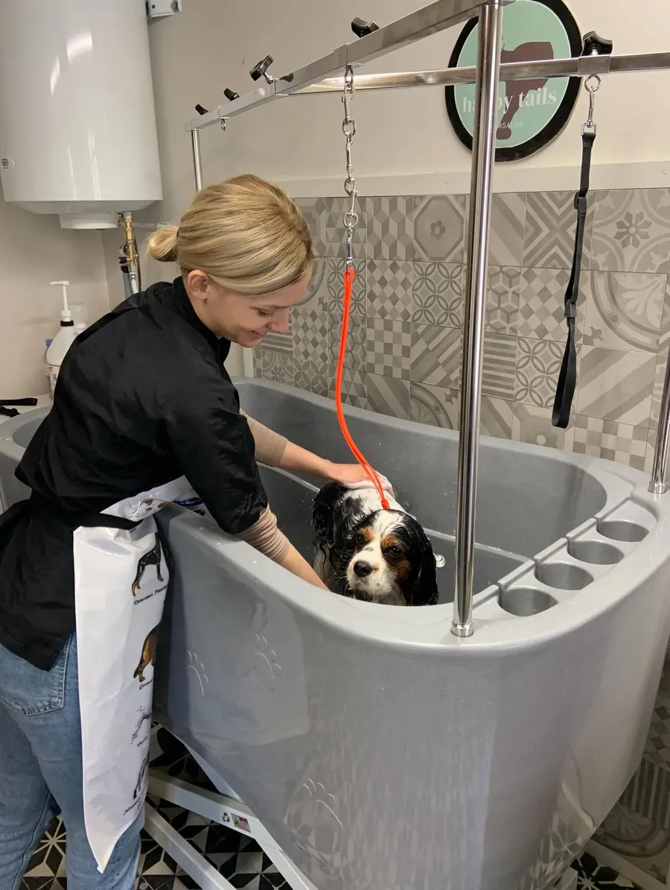
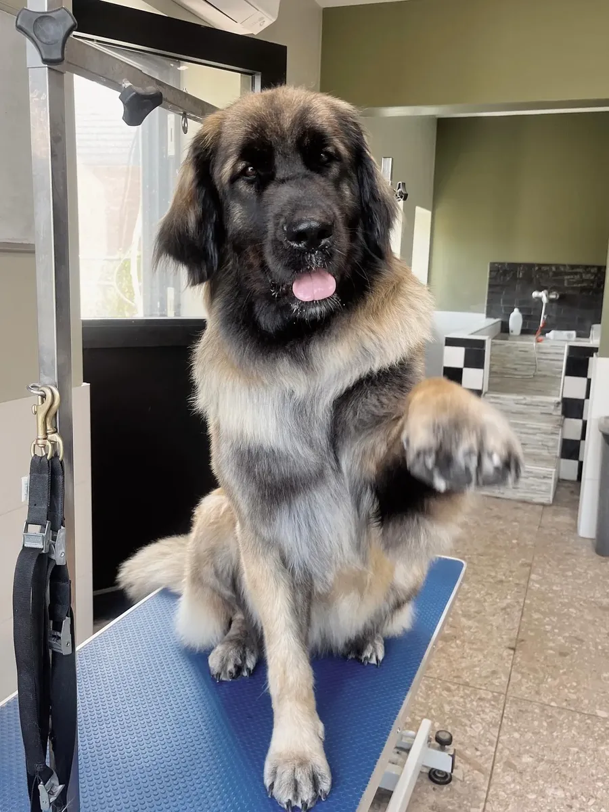
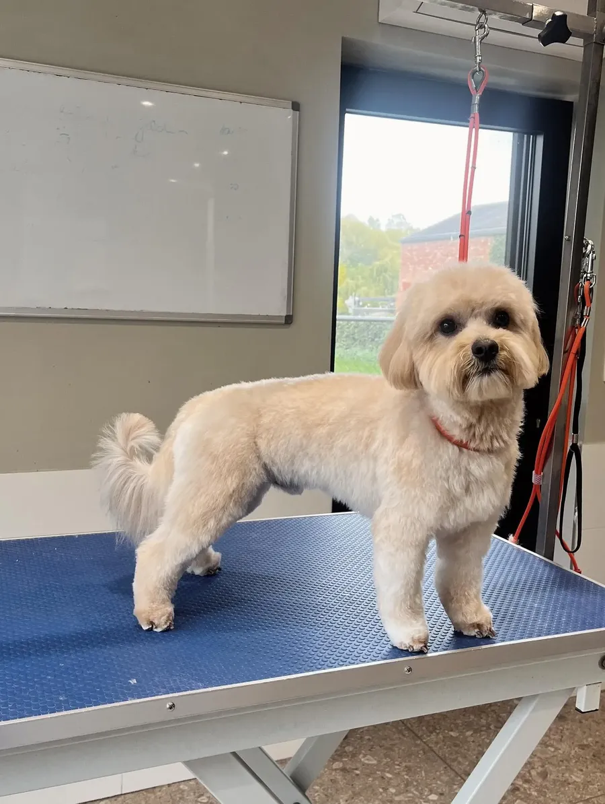
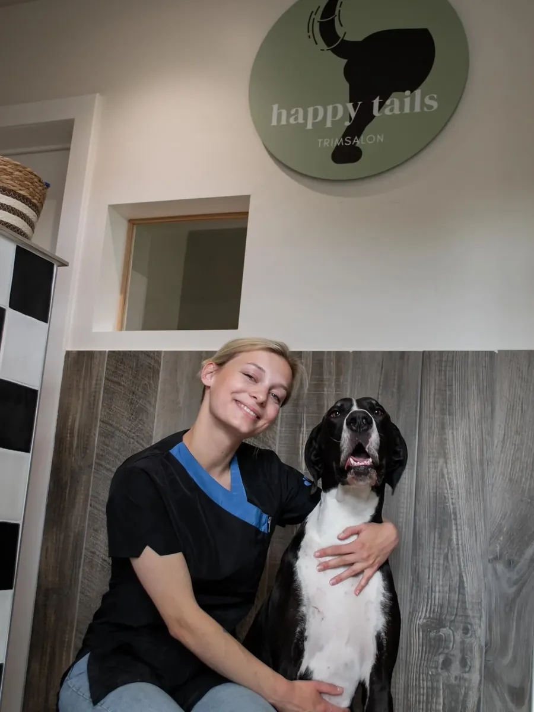

Trimmen en knippen
Een nette snit die past bij het ras en bij hoe jij je hond graag ziet.
KnippenTrimmen

Bij Aster ben je geen nummer. Ze kent elke viervoeter die hier binnen kwispelt: zijn karakter, zijn vacht en wat hij nodig heeft. Zo gaat je hond blij en ontspannen weer naar huis.

Mijn passie voor honden begon tijdens mijn studie dierenzorg. Na mijn eerste stage in een trimsalon wist ik het: dit is op mijn lijf geschreven.
Ik volgde een specialisatiejaar hondentrimmen en startte Happy Tails in bijberoep, bij mijn ouders. Vandaag werk ik voltijds in mijn eigen, ruimer salon aan huis in Hasselt. Met tijd voor elke hond, en altijd een babbel met het baasje.
Kleine teckel of grote Leonberger: we luisteren naar wat jij belangrijk vindt en houden rekening met het karakter van je hond.

Een nette snit die past bij het ras en bij hoe jij je hond graag ziet.

Een warm bad met professionele hondenshampoo, en daarna goed droog. Voor de ene een feestje, voor de andere iets spannender. We nemen de tijd.

Nagels knippen en een laatste borstel. Zo gaat je hond fris en verzorgd naar huis, en jij met een gerust hart.
Van een Red Fox Labrador tot een Leonberger. Een paar vaste klantjes, net klaar en helemaal stralend.






Geen extra winkelbezoek en geen gesleur meer met zakken voer. Je neemt alles mee wanneer je je hond komt ophalen.

Drie reviews, letterlijk zoals ze op Google staan.
★★★★★Al van haar start gaan Lilo en Pippa (2 Roemeense straathondjes) bij Aster in haar salon. Elke keer opnieuw kan ik alleen maar zeggen dat ik heel tevreden ben van het resultaat! Happy Tails = Happy Humans 🐾🐶
★★★★★Geen plek waar onze corgi Barney liever naartoe gaat dan hier! Hij geniet er werkelijk van en ziet er altijd schitterend uit achteraf! Kan Happy Tails alleen maar aanraden!
★★★★★Supervriendelijk trimsalon voor onze Cocker Miso en toplocatie met parking. Correcte service en flexibele comlunicatie. Miso is top verzorgd!
Happy Tails werkt enkel op afspraak. Stuur een berichtje met het ras van je hond en wat hij nodig heeft, dan zoeken we samen een moment. Er is parking bij het salon.

Ik maakte deze demo voor jullie om te tonen wat er kan. Na een kort gesprek maak ik er iets veel persoonlijkers van, helemaal naar jullie wens.
Vrijblijvend. Ik kom langs of we bellen.
Op maat, op jullie eigen domein.
Geen voorschot. Jullie betalen pas als alles klaar is.
Hosting, domeinnaam en kleine wijzigingen, zoals nieuwe openingsuren.
Omdat een voorbeeld meer zegt dan een mail. Zo zien jullie meteen wat er kan, en het kost jullie niets.
Nee. Het gesprek is vrijblijvend. Vinden jullie het niks, dan is het daarmee gedaan.
Na ons gesprek staat jullie site binnen 10 tot 14 dagen online.
Zeker. Jullie domeinnaam kan gewoon blijven, de nieuwe site komt in de plaats van de oude.
Nee, dat doe ik op basis van ons gesprek. Eigen foto's zijn mooi meegenomen, maar niet nodig om te starten.